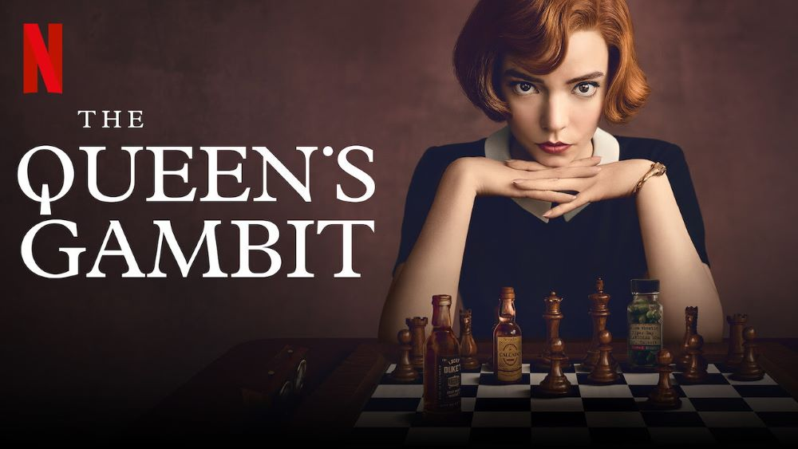

Miért érdemes sakkozni?

Ki ne ismerné a sakkot? Talán minden idők legnépszerűbb játéka, mely 1500 éve osztatlan sikert arat minden korosztályban. Sőt, most éli reneszánszát.
Egyre több fiatal kezdett napjainkban érdeklődni a sakk iránt, köszönhetően a Queen's Gambit c. filmsorozatnak. Vajon miért van ez? Mégis mit tesz hozzá a bábuk tologatása az életünkhöz?
A sakk egyszerre:
- játék
- sport
- tudomány
- művészet
Játék, mert élvezetet nyújt.
Sport, hiszen versenyszerűen is lehet űzni, sakkolimpia is van, illetve komoly fizikai leterheltséget okoz.
Tudomány, mert például orvosi kutatásokhoz, a mesterséges intelligencia fejlődéséhez a sakk is nagyban hozzájárult.
Művészet, hiszen alkotni lehet benne, saját stílust kialakítani, akár felfedezni és megoldani olyan sakkfeladványokat, amelyekre eddig még senki nem volt képes.
Magyarázat
A kreativitásteszt körök altesztjében az eredeti és származtatott kreativitási változók esetében megfigyelhetjük, hogy a sakkozók kreativitási indexe lényegesen magasabb értékeket mutat, mint a nem sakkozóké.A sakk az egyik leghatékonyabb eszköz a demencia kialakulásának megelőzésében. Időskorban is frissen tartja az elmét, szellemileg kiegyensúlyozza az embert. Rendszeres gyakorlásának gyógyító hatásai is vannak: Stroke után javítja a felépülés esélyeit, megakadályozza az Alzheimer-kórt, segít a skizofrénia kezelésében, véd a depressziótól, szorongástól.
Jelentősen fejleszti a beszédkészséget, a tanulási képességet. Formálja a személyiséget, képes egy teljesen új szemléletet megtanítani.
A sakk révén a játékos megtanulja a küzdeni tudást, az időbeosztást és a szabálykövető magatartást.
A sakkozás hozzájárul ahhoz is, hogy megtanuljuk a siker kezelését, és ami szintén nagy kihívás, elviselni a kudarcot.
Zárszóként megemlítenék még egy ajándékot, amit a sakktól kaphatunk: a közösséget.